Les plans
Notre objectif est de développer puis de publier les plans d'une série de modèles standards couvrant les différentes puissances/fonctions permises par les poêles de masse.
 Sidewinder 6700W |
 Cuisinière maçonnée |
 Sidewinder bidon |
|---|---|---|
|
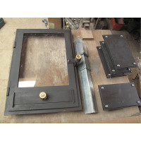
Metallerie |
 |
|
Cliquez sur une case pour voir la ficher du poêle correspondant.
Remarques générales
Licence :
Les plans que vous trouverez sur cette page et sur ce site sont distribués librement, sous une licence open-source CC BY-SA 4.0 : vous êtes libres de partager, d'utiliser, de transformer ce travail, même pour une utilisation commerciale tant que vous citez les auteurs originaux et que vous partagez les résultats de votre travail sous les mêmes conditions.
La construction d'un poêle de masse implique de nombreuses compétences et, bien que nous tentions de fournir les informations les plus claires possibles, nous ne pouvons garantir la réussite de votre construction. Nous ne donc saurions être tenus responsables de tout dommage, matériel ou immatériel causé à vous ou à vos équipements.
Matériaux et fournisseurs :
Les briques réfractaires à 40% d'alumine ainsi que le mortier réfractaire à l'argile (appelé coulis) utilisés pour ce poêle proviennent du briquetier PRSE (Produits Réfractaires du Sud Est).
Les vitres réfractaires de 4 mm d'épaisseur utilisées pour les portes vitrées peuvent être commandées chez INSERT-GLASS.
La peinture utilisée pour la métallerie est la laque mate à l'eau, teintée en noir, de Nature et Harmonie.
La cheminée interne est faite sur-mesure en laine céramique (1400°C) moulée sous vide par le fabricant belge QUINSIS. Nous organisons un groupement d'achat pour ce produit. Nous contacter pour plus d'informations.
Les échangeurs tubulaires en inox annelé (diam. 25 mm min.) pour l'eau chaude proviennent de Solaire Diffusion.
Construction :
Le débit des briques est donné en considérant que la plupart des chutes sont réutilisées. Il donc très important de :
- Découper les briques en partant des plus grandes. Une partie des chutes résultantes seront réutilisées.
- Découper sur le trait de coupe pour que l'épaisseur de la lame soit répercutée des deux cotés.
- Prévoir une marge d'au moins 5% sur les briques pour anticiper les erreurs de coupe.
Usage :
Les poêles de masse ne s'utilisent pas comme des poêles en fonte classiques. On fait une ou deux flambées par jour, par exemple une le matin et une le soir. Une flambée consiste à remplir le foyer, l'allumer (avec un allumage par le haut de préférence), fermer la porte, laisser le bois brûler jusqu'aux cendres puis fermer l'arrivée d'air principale et le clapet de fermeture générale.
Les poêles de masse sont dimensionnés pour chauffer une maison avec deux flambées par jour dans les périodes les plus froides. Il est généralement possible de faire 3 flambées par jour, mais au delà les briques saturent en chaleur et absorbent moins bien l'énergie des fumées : le rendement diminue.
Dérhumage :
Le dérhumage correspond à la première mise en chauffe du poêle. Les briques sont maçonnées au coulis (argile et chamotte) qui doit cuire doucement pour être solide. Avant tout, les briques et le coulis doivent être secs au toucher et à la vue. Ensuite, la procédure consiste à faire une flambée par jour pendant deux semaines en augmentant progressivement la charge de bois.
Par exemple, le batchrocket de 8,6 kW (cheminée interne de 250mm) brûle environ 28 kg de bois dans une pleine flambée. Le premier jour on brûlera donc 28/14 = 2kg de bois. Le deuxième jour 4 kg, et ainsi de suite jusqu'à une charge complète au bout de deux semaines.
De même, lorsqu'on rallume un poêle qui n'a pas servi pendant longtemps, il vaut mieux le mettre en chauffe progressivement avec un dérhumage accéléré.
Sidewinder standard de 6700W
Ce modèle standard est un poêle de masse dont le coeur de chauffe est un batchrocket. Par rapport aux batchrockets classiques, la cheminée interne de ce modèle est déportée sur le coté (d'où le nom de Sidewinder).
La première cloche et le coeur de chauffe sont entièrement en briques réfractaires à 40% d'alumine. La deuxième cloche est un banc de chauffe qui peut être réalisé en briques de terre crue.

Vue 3D du poêle avec banc de chauffe.
Fiche technique :
- Puissance : 6700W avec 2 flambées par jour
- Poids (sans le banc de chauffe) : environ 1050 kg
- Dimensions : 77x83 cm au sol et 172 cm de haut
- Version : 2
- Date de publication : 22 Juin 2017
- Fichier Sketchup : SIDEWINDER_STANDARD_6700W_V2.skp
- Débit : debit_sidewinder_standard_6700W_V2.txt
- Manuel en .pdf : MANUEL_sidewinder_standard_6700W_V2.pdf
Usage :
Ce poêle est destiné au chauffage de grands volumes ou de volumes mal isolés. Le four noir en haut à gauche du poêle atteint 500°C pendant la flambée et la température diminue par la suite jusqu'à la prochaine flambée. Le foyer est aux alentours de 350°C après la flambée, ce qui en fait aussi un excellent moyen de cuisson.
Remarques :
Ce poêle est actuellement en usage chez des membres de l'association Humus sapiens Pays d'Oc.
Images :


À gauche, poêle en cours de montage; à droite, banc de chauffe en briques de terre crue.
Cuisinière maçonnée de 1500W
Ce modèle standard reprend la traditionnelle cuisinière à bois en fonte. C'est un modèle purement expérimental pour l'instant puisqu'il n'a pas encore été construit et testé dans la réalité.
La tôle en acier qui sert de plancha devrait permettre de faire plus de trois flambées par jour sans diminution notable du rendement, chose impossible avec les poêles de masse entièrement en briques. Il est donc probable qu'il pourra être utilisé dans des maisons demandant une puissance de chauffe de 3000W, sous condition de faire 4 flambées par jour dans les périodes les plus froides.

Vue 3D de la cuisinière maçonnée.
Fiche technique :
- Puissance : 1500W avec 2 flambées par jour
- Poids : environ 700 kg
- Dimensions : 98x55 cm au sol et 95 cm de haut
- Version : 1
- Date de publication : 29 Juillet 2017
- Fichier Sketchup : cuisiniere_1500W_V1.skp
- Débit : debit_cuisiniere_1500W_V1.txt
- Manuel en .pdf :
Usage :
Ce poêle est destiné au chauffage de petits volumes ou de volumes bien isolés. Le four noir et le foyer permettent tous deux la cuisson de plats.
Le clapet de démarrage s'actionne depuis la face avant du poêle. En position verticale, les gaz doivent descendre jusqu'en bas du poêle pour y trouver l'ouverture de la cheminée d'évacuation. Ils remontent ensuite pour sortir par cette cheminée. En position horizontale, le clapet crée une ouverture dans la cheminée d'évacuation, ce qui permet au gaz de sortir plus chauds et donc d'augmenter le tirage du poêle. De manière générale, les clapets de démarrage sont très utiles :
- En été, lorsque la maison est plus froide que l'air extérieur
- En intersaison en cas de tirage trop faible voire de refoulement
- En cas de cheminée non isolée ou mal conçue
Remarques :
Le poêle est maçonné sur une base de 5 cm d'épaisseur de béton cellulaire (commercialisé sous les marques Ytong ou Siporex) pour qu'il n'y ait pas de diffusion de chaleur par le bas.
La cheminée d'évacuation visible en haut à gauche est un tube rond soudé en acier de 168 x 4,5mm. On peut y emboiter une conduite de cheminée standard de 153 mm de diamètre.
Il est très important que la plancha ait un disque de dilatation pour éviter qu'elle ne se déforme sous l'influence de la chaleur. Souder des cornières par dessous n'est PAS suffisant.
Une évolution possible pour ce poêle serait d'y intégrer un système de chauffage d'eau en y plaçant :
- Soit un échangeur tubulaire (inox annelé de 25 mm de diamètre par exemple)
- Soit un compartiment en inox sous le niveau de la plancha avec une ouverture de remplissage par le dessus et un robinet en partie basse pour avoir de l'eau chaude directement.
Images :


À gauche, vue de coté; à droite, vue de l'intérieur sans la plancha.
Sidewinder bidon de 1500W
Contrairement à ce que son nom indique, c'est un excellent poêle d'atelier ou d'appoint. Il ne s'agit pas vraiment d'un poêle de masse parce que le métal du bidon rayonne fort et rapidement, mais la masse du coeur de chauffe et du banc lui donne une inertie certaine et en fait un hybride entre le poêle de masse et le poêle en fonte.
À la différence des poêles de masse traditionnels entièrement en briques, le bidon en tôle de ce poêle rayonne immédiatement la chaleur produite par le coeur de chauffe. Il n'y a donc pas de phénomène de saturation (les briques chaudes absorbent moins bien la chaleur que les briques froides) et le poêle peut être rechargé plusieurs fois sans perte notable de rendement.
Donc, bien que ce poêle ne produise que 1500W sous deux flambées par jour, il est possible de doubler voir tripler sa puissance effective en brûlant quatre ou six flambées par jour.

Vue 3D du poêle.
Fiche technique :
- Puissance : 1500 à 4500W en considérant de 2 à 6 flambées par jour
- Poids : environ 250 kg sans le banc de chauffe; 550 kg avec
- Dimensions : 55x55 cm au sol et 150 cm de haut; le banc fait 55x150 cm au sol et 45 cm de haut
- Version : 4
- Date de publication : 1 Août 2017
- Fichier Sketchup : sidewinder_bidon_1500W_V4.skp
- Débit : debit_sidewinder_bidon_1500W_V4.txt
- Manuel en .pdf : Manuel_autoconstruction_sidewinder_bidon_1500W_V4.pdf
Usage :
Ce modèle nous sert de poêle d'appoint et de démonstration pendant les stages. C'est aussi notre poêle de prototypage sur lequel nous avons testé plusieurs versions du batchrocket et différentes possibilités d'arrivée d'air secondaire.
C'est un excellent poêle de test pour expérimenter les batchrockets et le principe des cloches.


Dans le sens de la lecture : trois premières versions du sidewinder bidon de 1500W
Le joint entre le bidon et les briques se fait avec un mortier de vermiculite et de terre argileuse.
Remarques :
Les peintures des bidons dégageront des fumées toxiques à la chauffe si elles ne sont pas retirées avant la première mise en chauffe. Nous conseillons de faire sabler les bidons avant de retirer la partie supérieure car les bidons risquent de se plier sous la force du sablage.
Pour protéger les bidons de l'oxydation, il est possible de culotter les bidons avec de l'huile de tournesol. Pour cela, il faut appliquer une fine couche d'huile sur le bidon avant de le mettre en chauffe. Une couche trop épaisse rendra le culottage collant. Plusieurs couches permettent d'obtenir un fini noir mat très prisé des bidonniers. Attention aux dégagement de fumée lors des premières chauffes.
Pour ceux qui n'aiment pas l'esthétique bidonnière, il est aussi possible de faire plier et souder en carré ou en octogone une plaque de tôle.
Images :
- 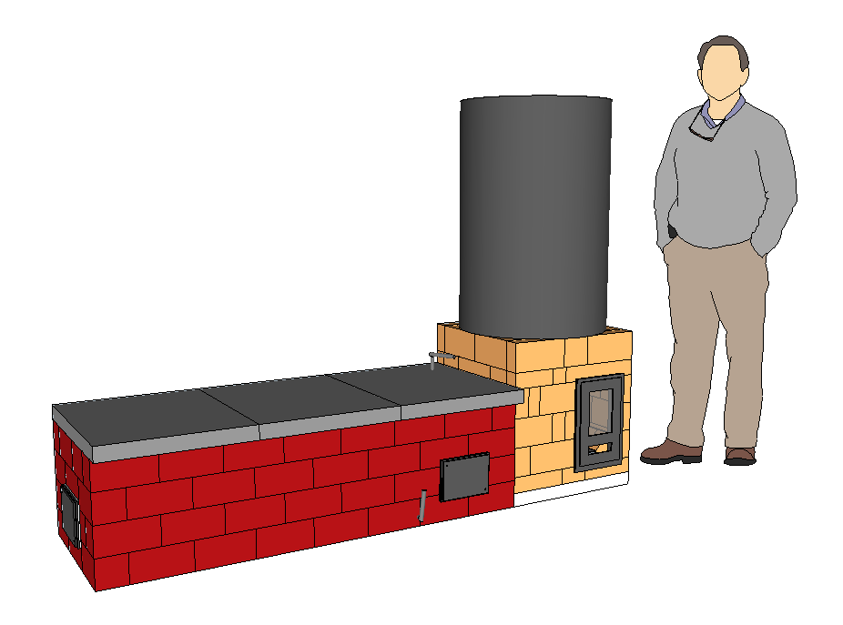
- 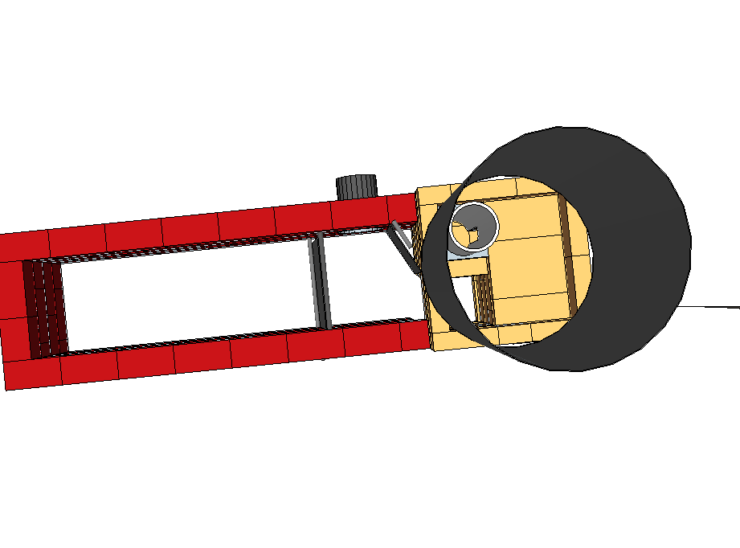
En haut, vue de coté; en bas, vue de haut sans la partie supérieure du bidon et sans les dalles du banc de chauffe.
Métallerie
Nous réalisons nous même toute la métallerie pour nos poêles. Nous apprenons aux stagiaires les techniques qui leur permettront de réaliser la métallerie pour leur propre poêle.
Nous travaillons uniquement avec des profilés métalliques standards de l'industrie : cornières, Tés, fers ronds, fers plats, tôle, etc.. Il est donc facile pour n'importe qui de se procurer les matériaux de base pour faire la métallerie de son poêle.
Portes et trappes de visites pour un batchrocket de 8600W.
1. Portes et bâtis
Règles de conception :
La porte a été conçue pour que l'arrivée d'air ne soit pas réglable. Elle est soit complètement ouverte, soit complètement fermée. C'est important pour que le poêle reste simple à utiliser. D'après notre expérience, les bénéfices que l'on retire d'un réglage de l'arrivée d'air sont négligeables sur un Batchrocket. La plupart du temps le réglage risque de diminuer la qualité de la combustion.
L'arrivée d'air dans la porte est située le plus bas possible. La surface de cette ouverture vaut 25% de la section (surface en coupe transversale) de la cheminée interne. Voir l'article correspondant sur les proportions.
Le bâti n'est pas vissé dans la maçonnerie, mais maintenu par compression. C'est un détail très important car la dilatation des vis ferait éclater les briques par cisaillement (leur point faible).
Matériaux nécessaires :
- Cornière à ailes inégales de 30x50x5 mm
- Té à ailes égal de 40x40x5 mm
- Paumelles à souder "MAROC" en 80 mm sauf pour les portes des foyers des batchrockets de 1500W pour lesquelles nous utilisons des paumelles de 60 mm
- Tresses céramiques plates autocollantes de 10x2 mm pour l'étanchéité portes/vitres et portes/bâti
- Laine céramique SUPERWOOL 607HT pour l'étanchéité entre le bâti et le poêle
- Vis de poêlier avec écrou pour les poignées en bois
- Tôle pliée de 1 ou 1,5 mm d'épaisseur qui sera vissée contre le bâti (avec des vis autoforeuses) pour le maintenir en position
Points délicats :
- Soyez précis, travaillez sur un marbre, bloquez vos pièces avant de souder : planéité et angles droits sont de rigueur !
- Il faut 5 mm de jeu coté intérieur entre une porte et son bâti pour qu'il n'y ait pas de blocage lié à la dilatation des portes.
- Le bâti ne doit pas être vissé dans les briques qui éclateraient à cause de la dilatation du métal.
- Les vitres sont maintenues en position par deux morceaux de fers plats soudés.
Images :
- 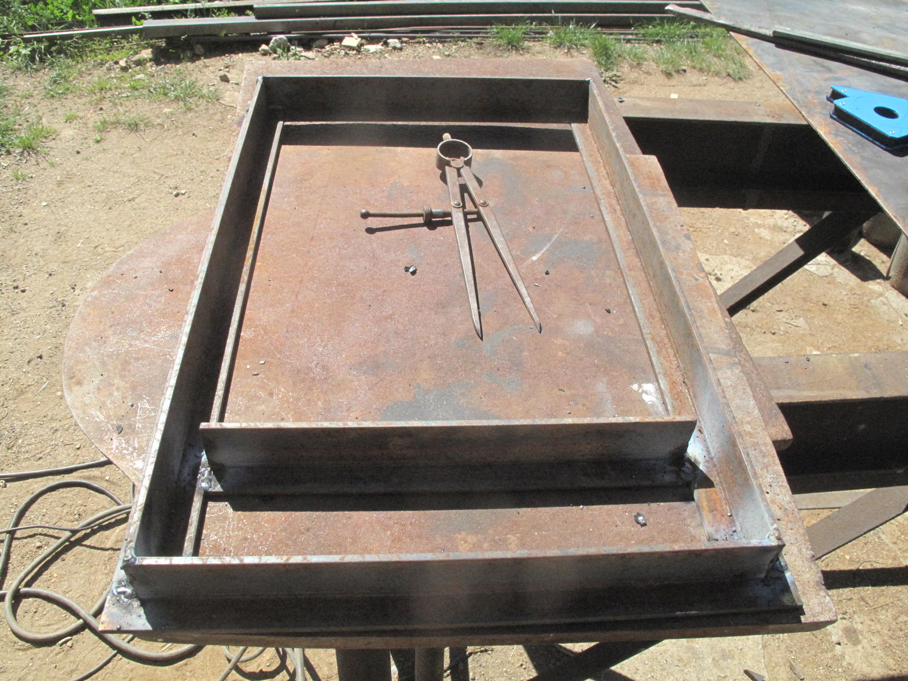
- 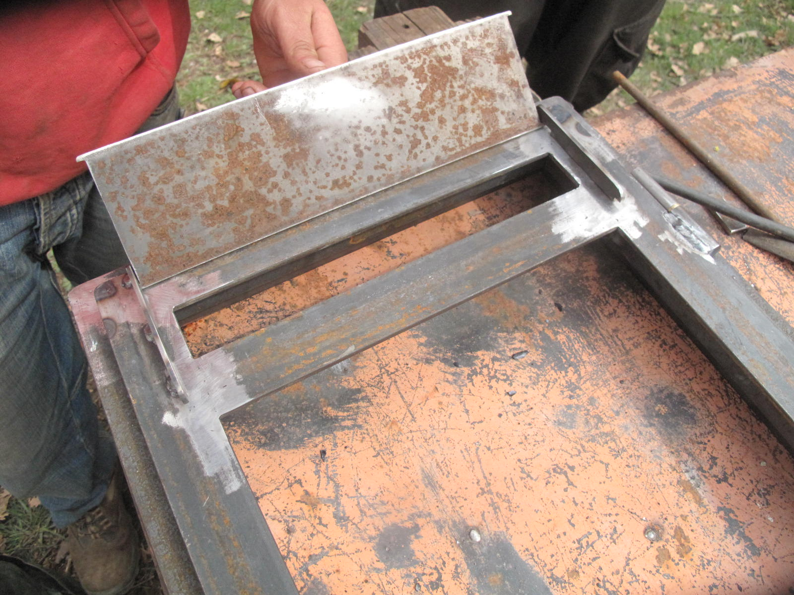
- 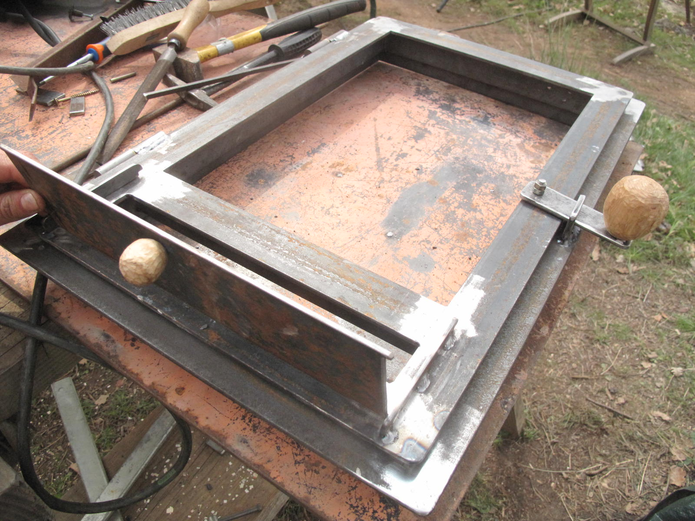
- 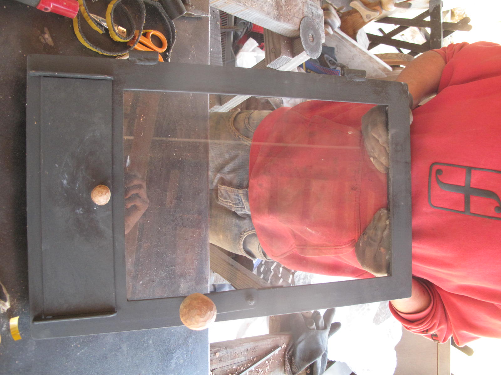
Dans le sens de la lecture : étapes de fabrication d'un ensemble porte/bâti pour le foyer.
2. Trappes de visites
Règles de conception :
La partie du bâti de la trappe qui s'insert dans la maçonnerie reprend les dimensions d'une brique ou d'une demi-brique pour qu'il puisse s'insérer dans le mur à la place d'un brique.
La trappe doit être la plus étanche possible.
Les trappes doivent être placées de sorte qu'on puisse accéder à toutes les parties à l'intérieur du poêle.
Matériaux nécessaires :
- Cornière à ailes inégales de 30x50x5 mm
- Tôle de 3 mm d'épaisseur
- Fil de fer
- Tresses céramiques plates autocollantes de 10x2 mm pour l'étanchéité portes/vitres et portes/bâti
- Laine céramique SUPERWOOL 607HT pour l'étanchéité entre le bâti et le poêle
- Vis de poêlier
- Tôle pliée de 1 ou 1,5 mm d'épaisseur qui sera vissée contre le bâti (avec des vis autoforeuses) pour le maintenir en position
Points délicats :
- Soyez précis, travaillez sur un marbre, bloquez vos pièces avant de souder : planéité et angles droits sont de rigueur !
- Le bâti est taraudé pour pouvoir y visser la tôle.
- Le bâti est percé dans les quatres coins et les trous permettent de l'accrocher à des fils de fer torsadés qui sont intercalés dans le mortier.
Images :
- 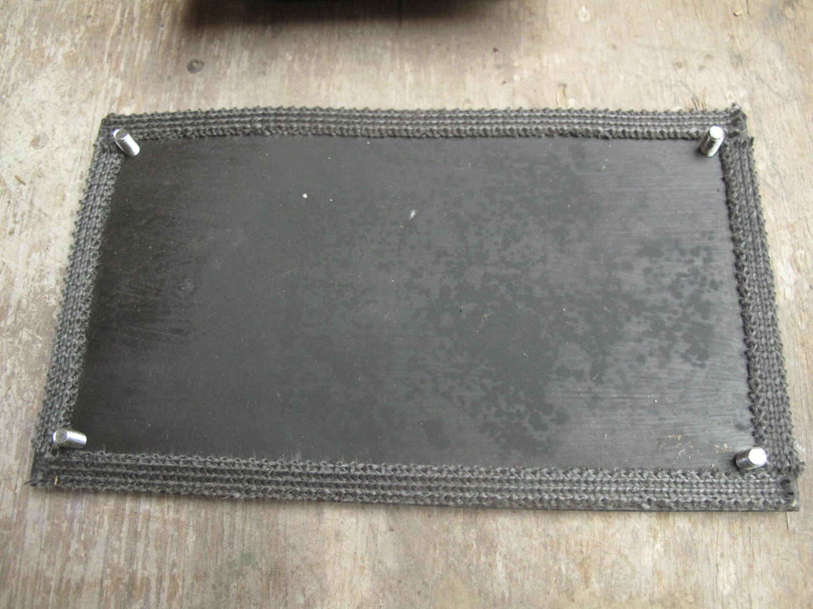
- 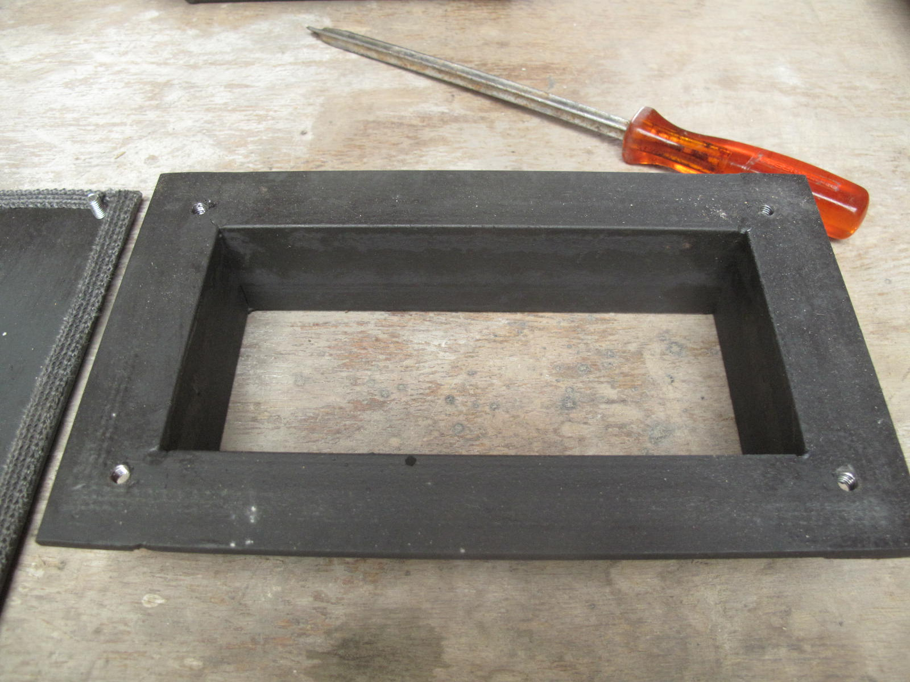
-

- 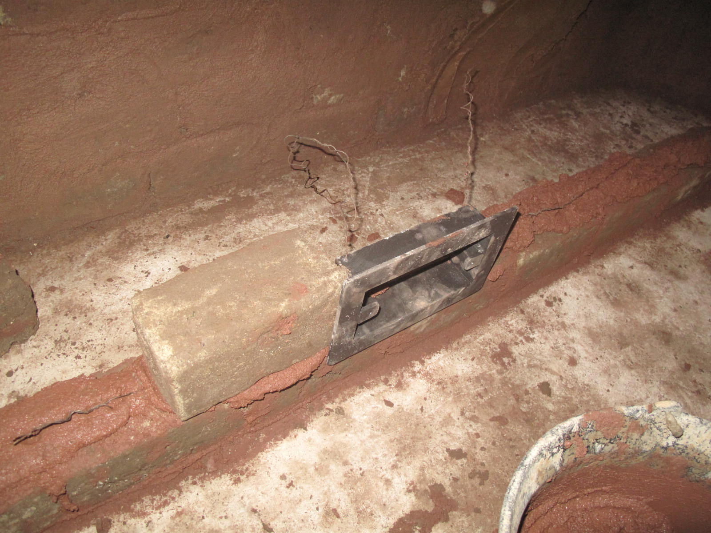
Dans le sens de la lecture : étapes de fabrication et de pose d'une trappe de visite.
3. Clapets d'obstruction
Règles de conception :
-
Le clapet d'obstruction est ESSENTIEL. Beaucoup de poêles de masse (Rocket surtout, mais d'autres aussi) n'en sont pas équipés et c'est regrettable. Il permet de fermer la cheminée d'évacuation après que le feu soit éteint.
C'est important car à la fin de la flambée, toute la maçonnerie a accumulé de la chaleur et un tirage résiduel important se maintient même après l'arrêt du feu. Ce tirage subsiste même si l'arrivée d'air principale est fermée. Il envoie tranquillement mais sûrement la chaleur à l'extérieur.
-
Les normes aux US stipulent que le clapet d'obstruction doit être étanche à 5%. Ceci permet d'éviter que, si le clapet d'obstruction est fermé trop tôt alors que le feu brûle encore, les gaz imbrûlés refoulent dans la maison et intoxiquent ses occupants.
En pratique, les clapets rotatif comme nous les fabriquons sont difficilement étanches à 5%. En effet, il faut laisser un jeu de 2 mm pour anticiper la dilatation et il faut bien s'appliquer pour que le clapet soit positionné le mieux possible.
Matériaux nécessaires :
- Tôle de 3 mm d'épaisseur
- Fer rond de 16 mm d'épaisseur
Points délicats :
- Soyez précis, travaillez sur un marbre, bloquez vos pièces avant de souder : planéité et angles droits sont de rigueur !
- Une fois mis en position à blanc, le clapet est retravaillé avec une meuleuse d'angle et un disque à ébarder pour ajuster les bords.
- Une petite goupille qui maintient le clapet en position verticale peut être nécessaire.
Images :
- 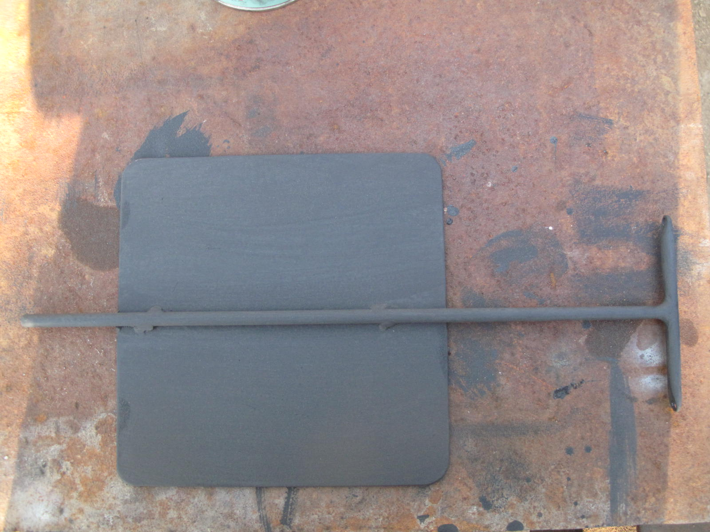
- 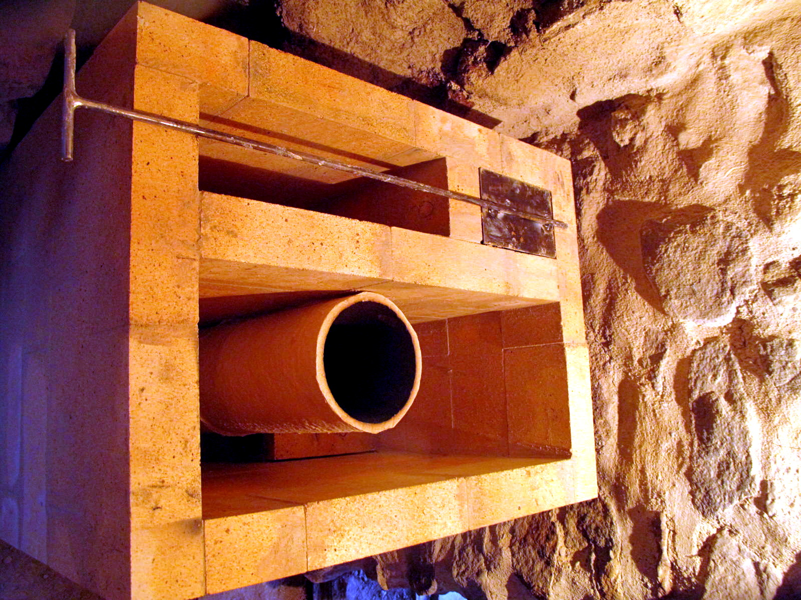
- 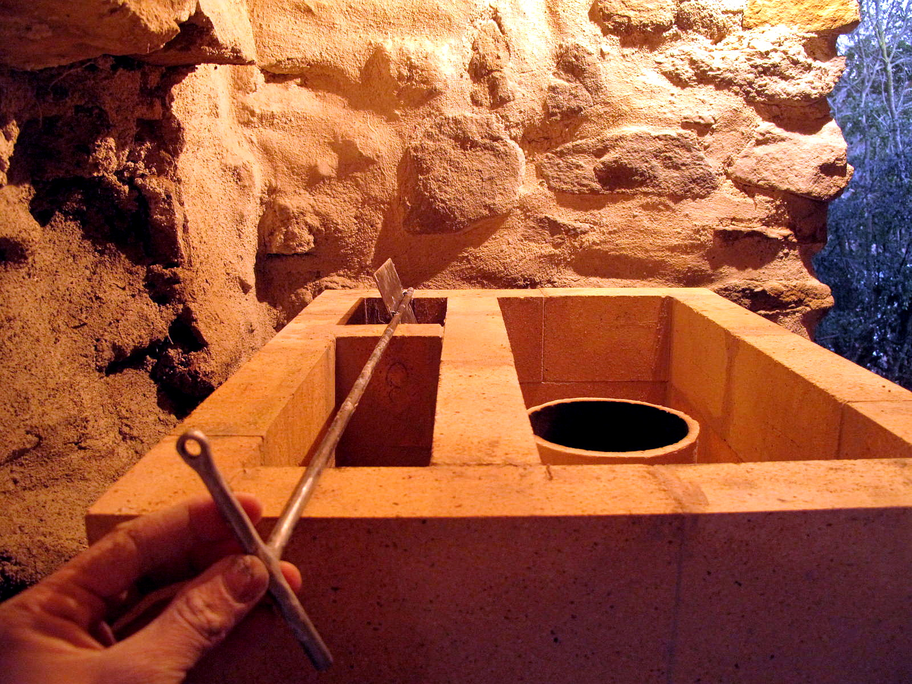
- 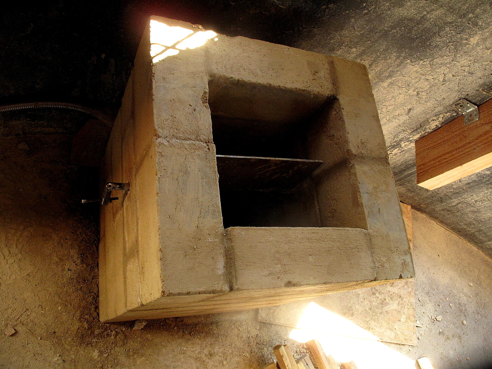
- 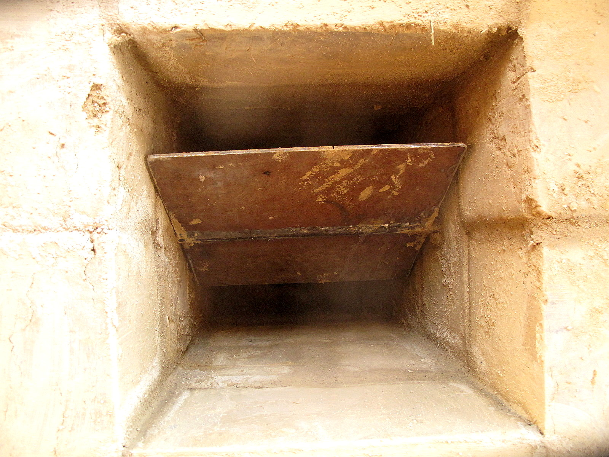
Photos de différents clapets d'obstruction.
3. Clapets de démarrage
Règles de conception :
-
Le clapet de démarrage (aussi appelé "starter" ou "by-pass") est un autre élément ESSENTIEL. Il permet de créer un raccourci sur le chemin des gaz. Les gaz sont donc en contact avec moins de surface de briques et sortent plus chaudes. On réchauffe ainsi pendant 5-10 minutes la cheminée pour créer un bon tirage puis on ferme le clapet.
-
Pour que le clapet de démarrage soit efficace. L'ouverture dans la maçonnerie doit être supérieure ou égale à 25% de la section de la cheminée interne.
Le clapet de démarrage permet aussi de faire fonctionner facilement le poêle en intersaison voir même en été, lorsque la maison est plus froide que l'air extérieur.
Matériaux nécessaires :
- Tôle de 3 mm d'épaisseur
- Fer rond de 16 mm d'épaisseur
Points délicats :
- Soyez précis, travaillez sur un marbre, bloquez vos pièces avant de souder : planéité et angles droits sont de rigueur !
- Le clapet de démarrage doit impérativement être en dessous du niveau haut de la cheminée interne. S'il était plus haut, la chaleur risquerait de le déformer trop fortement.
- La poignée du clapet de démarrage doit souvent être soudée en place.
Images :
Clapet de démarrage en position.
Mise en place du clapet de démarrage.Source : Pascal Burnet, Stage UZUME, 2017.